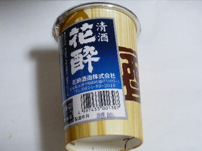

花酔酒造
広島県庄原市総領町稲草1995-1
2016/10/30 花酔酒造のカップ酒
道の駅たかので買いました。

口に含んだときはあっさりでしたが、喉を通る時に、味が濃いなって思いました。
パンチがあるって言うのか、刺激があるっていうのか、のど越しが一番印象に残りました。
今回はそのまま飲んだんですが、次回はレンジでチンして日本酒風味を楽しみたいって思いました。
広島県庄原市総領町稲草1995-1
道の駅たかので買いました。

口に含んだときはあっさりでしたが、喉を通る時に、味が濃いなって思いました。
パンチがあるって言うのか、刺激があるっていうのか、のど越しが一番印象に残りました。
今回はそのまま飲んだんですが、次回はレンジでチンして日本酒風味を楽しみたいって思いました。